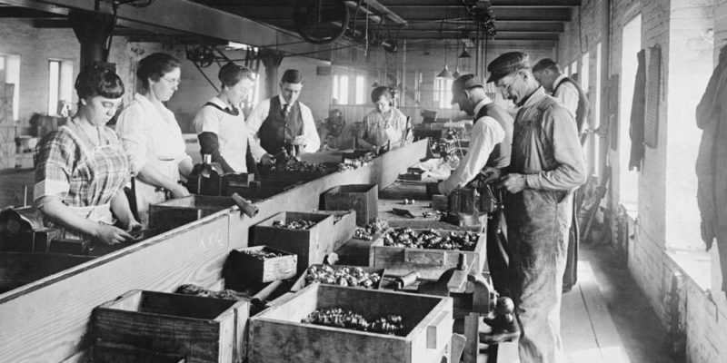
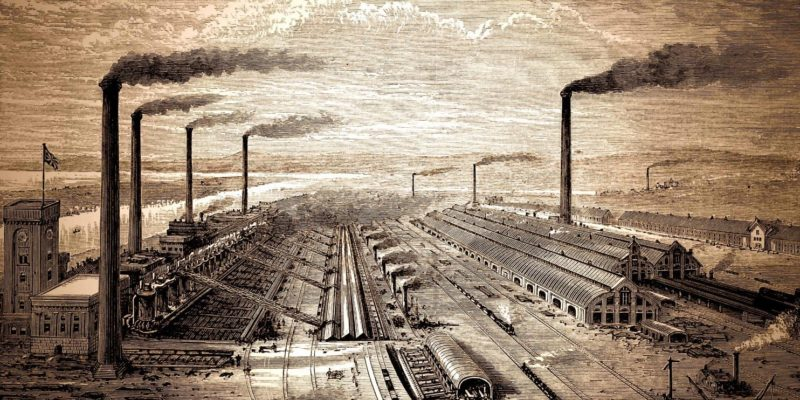

La Revolución Industrial o Primera Revolución Industrial es el proceso de transformación económica, social y tecnológica que se inició en la segunda mitad del siglo XVIII en el Reino de Gran Bretaña, que se extendió unas décadas después a gran parte de Europa occidental y América Anglosajona, y que concluyó entre 1820 y 1840.
Durante este periodo se vivió el mayor conjunto de transformaciones económicas, tecnológicas y sociales de la historia de la humanidad desde el Neolítico, que vio el paso desde una economía rural basada fundamentalmente en la agricultura y el comercio a una economía de carácter urbano, industrializada y mecanizada.
La Revolución Industrial marca un punto de inflexión en la historia, modificando e influenciando todos los aspectos de la vida cotidiana de una u otra manera. La producción tanto agrícola como de la naciente industria se multiplicó a la vez que disminuía el tiempo de producción. A partir de 1800 la riqueza y la renta per cápita se multiplicó como no lo había hecho nunca en la historia, pues hasta entonces el PIB per cápita se había mantenido prácticamente estancado durante siglos. A partir de este momento se inició una transición que acabaría con siglos de una mano de obra basada en el trabajo manual y el uso de la tracción animal, siendo estos sustituidos por maquinaria para la fabricación industrial y para el transporte de mercancías y pasajeros. Esta transición se inició hacia finales del siglo XVIII en la industria textil, así como en lo relacionado con la extracción y utilización de carbón. La expansión del comercio fue posible gracias al desarrollo de las comunicaciones, con la construcción de vías férreas, canales y carreteras.
Los inicios de la industrialización europea hay que buscarlos en la Edad Moderna. A partir del siglo XVI se vislumbra un avance en el comercio, métodos financieros, banca y un cierto progreso técnico en la navegación, impresión o relojería. Sin embargo, estos avances siempre se veían lastrados por epidemias, constantes y largas guerras y hambrunas que no permitían la dispersión de los nuevos conocimientos ni un gran crecimiento demográfico.
La Revolución Industrial supuso un cambio notable en la forma de producir y en la organización del trabajo. Provocó una inmensa generación y acumulación de riqueza, generalmente concentrada en los sectores burgueses que tenían la propiedad de las fábricas o se dedicaban al comercio y las finanzas. Este cambio también influyó en las posteriores innovaciones tecnológicas y productivas que expandieron el capitalismo a nivel mundial. A raíz de la Revolución Industrial, los grandes conglomerados urbanos multiplicaron su población y se produjo una notable separación entre la ciudad y el campo.
- La industria textil.
- La industria minera
- La industria siderúrgica.
- La industria del transporte
- La expansión comercial.